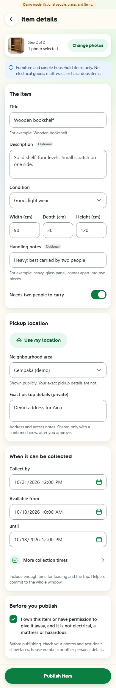
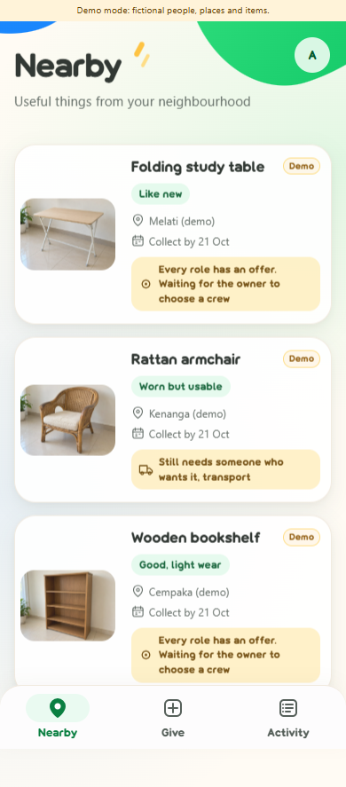
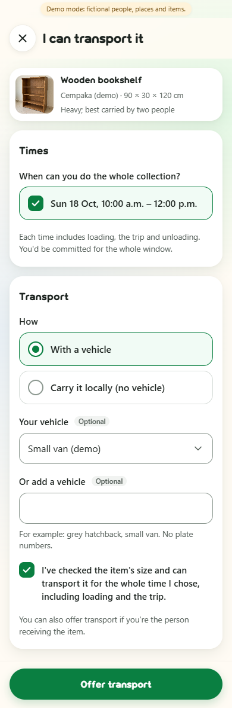
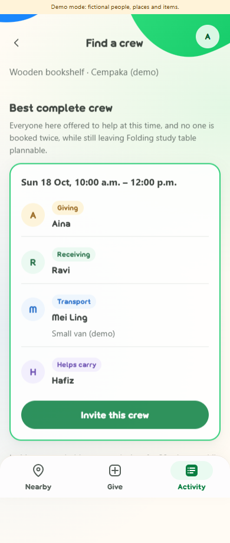
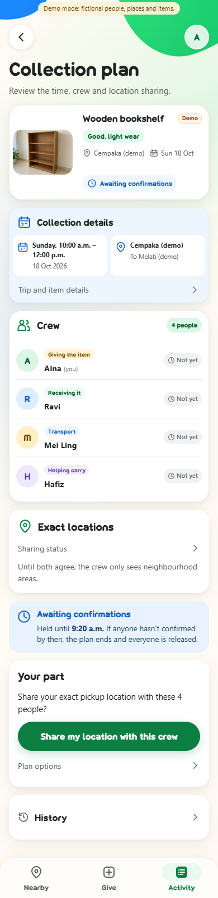
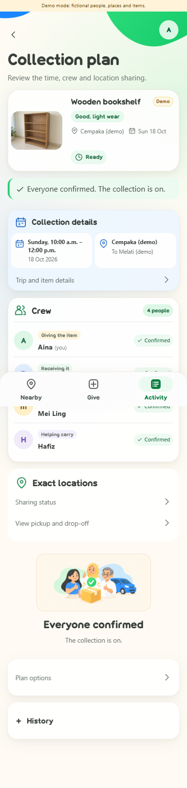
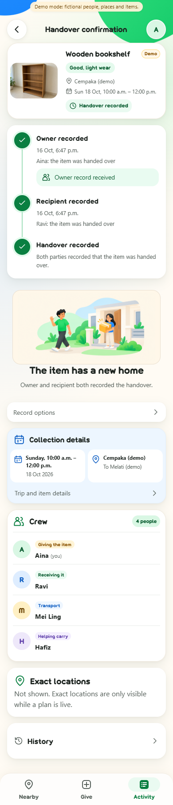
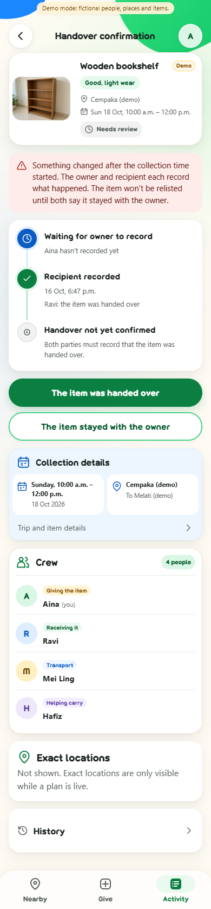
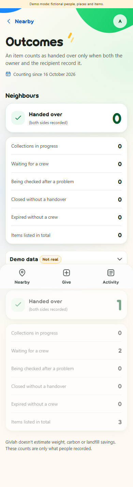

Step 01
Start with the item
Aina chooses a photo, then adds condition, dimensions, carrying needs, collection times and a private pickup address. She declares permission to give the item away. Nearby shows the neighbourhood area.


The Givlah field guide / 16 October 2026
Give usable household items a new home by arranging the people, transport and time needed to collect them.
Built for the Sime Darby Property (SDP) University Hackathon 2026.
A neighbour wants your bookshelf. Someone has a van. Another person can help carry it. Givlah brings their offers into one collection plan, checks their declared availability across competing items, and asks everyone to confirm.
From “I'd like this” to “we can collect it.”
Start here · about a minute
02 / Follow one item
These are screenshots captured from the running Django app in Microsoft Edge at 390 px. Every person, item, address and outcome is synthetic demo data. The item photos and in-app illustrations were generated with AI image tools. A controlled server clock advances to the collection window; no physical collection took place.

Watch the captioned demo on YouTube, or play it here with JavaScript enabled.
Watch on YouTubeThe video includes captions; no sound is needed. Chapter links below follow the written app walkthrough. Select a screenshot to open its full-size capture.
Step 01
Aina chooses a photo, then adds condition, dimensions, carrying needs, collection times and a private pickup address. She declares permission to give the item away. Nearby shows the neighbourhood area.

Step 02
Ravi wants the bookshelf. Mei Ling offers her van for the full collection window and declares the item fits. Hafiz offers carrying help. Each person acts through their own account.

Step 03
The bookshelf and folding table share Mei Ling's van. The matcher finds a morning crew for the shelf while keeping the table plannable in the evening. A suggestion reserves nothing.

Step 04
Aina invites the crew. Everyone's time is held for up to 20 minutes, or until collection start if sooner. Aina and Ravi each approve sharing their own exact location with this version of the crew.

Step 05
Once both locations are approved, all four people confirm the same plan and the full trip window. Only then is the plan Ready. A material change ends the old plan and requires fresh approvals and confirmations.

Step 06
After the controlled clock reaches collection start, Aina records that the item was handed over. It stays pending until Ravi records receipt separately. Helpers cannot record for either party.

Step 07
In a separate branch, Aina withdraws her handover record. Completion is removed and the plan needs review. After a collection may have started, the item cannot automatically return to the feed; both parties must say it stayed with the owner before reopening.

Step 08
Before that retraction, the outcomes screen shows one fictional handover in its separate demo disclosure. The real total stays zero. Counts include an observation period and the eligible published-listing denominator.

03 / The mechanism
For each item, Givlah combines an owner, a recipient, a transport provider and a distinct extra helper when needed. The recipient may also provide transport and is counted once. Carrying locally still needs a declared provider, but no vehicle.
A small synthetic conflict
All three use the same interval; other people are distinct. Choosing A first blocks B and C. Choosing B + C makes two complete arrangements. This constructed case explains the mechanism; it does not show how often such conflicts occur in a neighbourhood.
Rules: matching contract · G04–G11, G15
Public cards show a neighbourhood zone. Exact pickup and destination details live in separate private records. GPS is requested only on a tap, with manual entry available.
Exact details require current membership, both location owners' approvals and the current live plan version. Invalidation, review or completion revokes access. Revocation cannot erase something already seen.
Accepted photos are decoded and re-encoded with metadata removed; originals are not stored. This does not remove faces or addresses pictured in the image. Owners still review visible content.
Private records expire seven days after closure, deadline or the last associated collection end, whichever is later. Access is blocked at expiry; purge runs on the next request or startup. An inactive local app has no scheduled deletion worker.
Rules: location and photo privacy · G01–G03, G12–G14, G18
A unique listing counts as handed over only when its owner and recipient separately agree. One record, a retraction or disagreement cannot count as completion. Real and synthetic outcomes stay separate; reported outcomes are not proof of avoided disposal or environmental benefit.
Rules: plan states and outcomes · G16–G17, G20
04 / Research & gap
Finding someone who wants an item can still leave transport, carrying help and a shared time to arrange. A 2023 study of unwanted household goods identifies coordination and practical enablement as issues in increasing reuse. That motivates our question; it does not establish demand for Givlah in Malaysian townships.
Existing alternatives already address parts of this work. Olio permits collection by a friend or neighbour; The Salvation Army Malaysia offers bulky-item collection enquiries. Tiptapp describes paid help, Furnish Forward advertises volunteer-mover pickups, and Nearby advertises multi-helper tasks. SignUpGenius supports role and time slots.
Givlah combines complete crews across items, checks shared people and vehicles, then connects approvals, confirmations, withdrawal recovery and two-party handover records. A careful spreadsheet can implement the same matching; reduced effort has not been measured.
This is desk research and a local synthetic prototype. Competitors' full workflows were not tested. Resident demand, reliable transport participation, real handovers and environmental benefit remain unvalidated. No worldwide-first claim is made.
Public sources checked . Advertised capabilities are provider descriptions, not independently verified service results.
Read the full research, competitor comparison and evidence limits
05 / Evidence & boundaries
The repository defines acceptance scenarios G01–G20. Its draft status text predates implementation; scenario definitions are not a test report. The figures below come from checks executed on , against app commit d1c75a5.
| Check | Executed result |
|---|---|
| Django test suite | 77 tests passed. Covers permissions, image sanitation, coordination, concurrent writes, rollback, expiry, handover, retention and outcome counts. |
| Independent matcher comparison (G08) | 300 generated small cases agree with exhaustive feasible-subset enumeration; 112 cases have tied optima. |
| Clean local setup | Fresh clone and virtual environment: pinned dependencies installed, migrations applied, three fictional listings loaded, demo account switching and local server exercised. |
| Rendered walkthrough | Real form submissions and separate synthetic-user browser sessions exercise offers, invitation, both location approvals, four confirmations, dual handover, retraction and outcome totals. |
Tests and captured demo interactions use offline fixtures and a controlled clock. They establish local software behaviour, not service quality, safety, adoption or real-world impact. Run the current tests yourself with the command below.
06 / Try it
No public app instance is linked yet. The documentation site and the Django app are separate deployments.
The intended hosted demo is for synthetic data only, will reset periodically, and may be slow on first load. Its URL and reset schedule will be added when deployment exists. For now, run the local demo below.
Open local setup07 / On your machine
You need Git and Python 3.12 or newer. These instructions start a local development instance; they are not a production deployment recipe.
git clone https://github.com/Givlah/Givlah.git
cd Givlah
python -m venv .venv.\.venv\Scripts\python.exe -m pip install -r requirements.txt
.\.venv\Scripts\python.exe manage.py migrate
.\.venv\Scripts\python.exe manage.py load_demo
$env:GIVLAH_DEMO_MODE = "1"
.\.venv\Scripts\python.exe manage.py runserver.venv/bin/python -m pip install -r requirements.txt
.venv/bin/python manage.py migrate
.venv/bin/python manage.py load_demo
GIVLAH_DEMO_MODE=1 .venv/bin/python manage.py runserverOpen http://localhost:8000. Choose a labelled synthetic account on the sign-in page. The loader creates three fictional listings and offers that compete for one van. It does not create real residents or real handovers. To use ordinary account creation, run without GIVLAH_DEMO_MODE.
As Aina, open the wooden bookshelf and find a crew. Invite the suggested crew, then use separate browser profiles or sign out and switch demo accounts to approve and confirm each person's part. The generated windows are two days ahead. Handover recording becomes available after the collection start; the screenshot walkthrough uses a controlled clock to demonstrate that later state.
# Windows
.\.venv\Scripts\python.exe manage.py test
# macOS / Linux
.venv/bin/python manage.py testTo refresh fictional fixtures locally, stop the server and run manage.py load_demo --reset with your virtual environment's Python. This deletes synthetic listings and their plans; it is not a production reset tool.
Setup: repository README · settings and environment variables
08 / Further reading
Django 5.2 serves the app and owns authentication, validation and persistence. Coordination rules live in plain Python service functions. SQLite uses short IMMEDIATE write transactions with repeated overlap checks. Pillow sanitizes photos. There is no model API, route service, geocoder or paid provider on the critical path.
Developed with the help of AI coding tools. The in-app illustrations and demo item photos were generated with AI image tools; they show fictional items, not real listings. This matches the repository disclosure. Automated checks and synthetic walkthroughs are not independent human validation.
This static guide has no analytics, forms or tracking scripts. Fonts, images, CSS and JavaScript are served locally. Once a video is configured, clicking Play loads a youtube-nocookie.com iframe and allows YouTube to receive your request; nothing is sent there before that click. Following an external source link also opens that service. Your hosting provider may keep ordinary request logs.